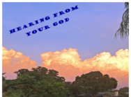
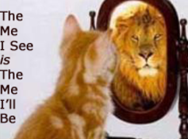
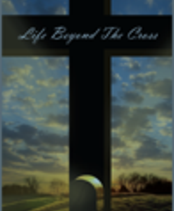

Explore the Teaching Ministry
Scripture-rooted resources to help every believer discover identity, gifts, and calling in Christ.

God & His Word
Discover how God speaks through His still small voice, revelation knowledge, and the living Word.
Read More
The Believer
Teachings on peace, wholeness, sweet communion with God, and the believer's inheritance in Christ.
Read MoreEphesians 4:11
An in-depth study of the five-fold ministry gifts — apostle, prophet, evangelist, pastor, and teacher.
Read MoreMeditation & Journaling
Practical guides for meditating on God's Word and capturing revelation through intentional journaling.
Read More
Videos
Watch teaching sessions on Facebook and YouTube — practical, scripture-based, encouraging.
Watch Now
The Program
An immersive program walking believers through identity, calling, and kingdom purpose.
Learn More